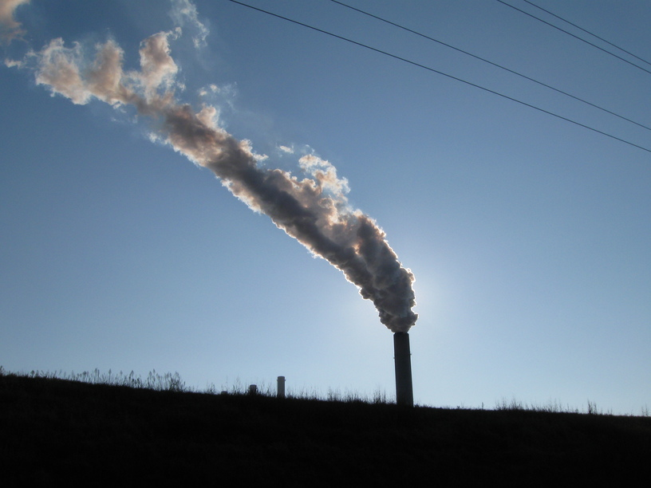
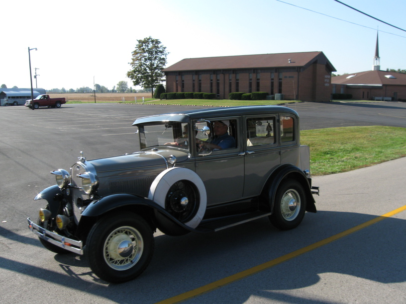
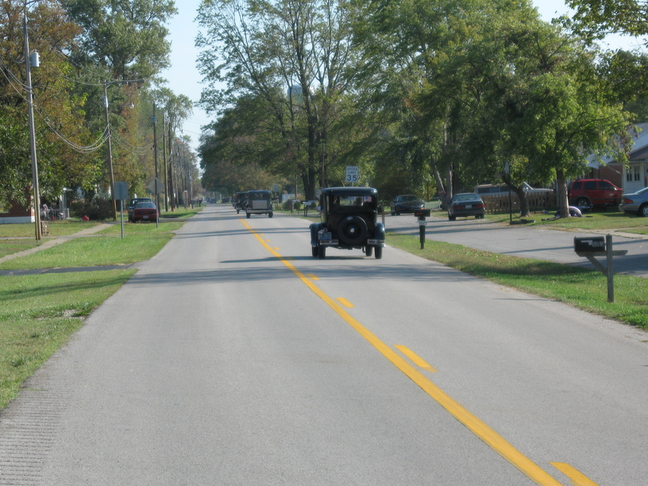

11 Oct 2008, Henderson, KY
A few rules for a successful bike tour:
Drink before you're thirsty
Eat before you're hungry
Stop riding before you sleep
Don't stop riding until long after you're tired
Today was pleasant. I breakfasted with the XC team, then took off for Owensboro. The riding was Ohio-flat with an intermittent tailwind, so I got a lot of miles in.
After lunch I passed two riders who were going the other direction on the same route. Their names were Peter and Diana. We chatted briefly—mainly about our route plans & how few other touring cyclists we'd seen. I realized that the one thing we didn't discuss, which has been a part of virtually every other conversation I've had recently, was the question, "Why are you doing this?"
I guess if you know, you know.


